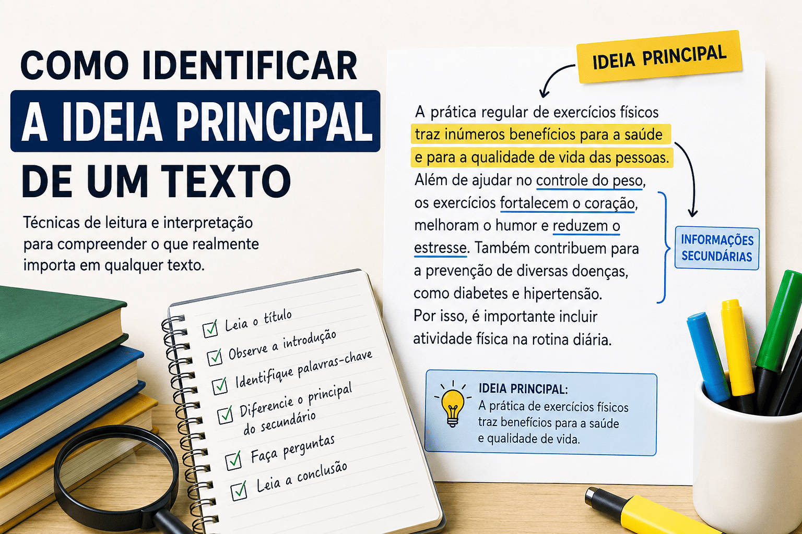

Como identificar a ideia principal de um texto
Identificar a ideia principal de um texto é uma habilidade essencial para quem deseja melhorar a interpretação textual, estudar para vestibulares, concursos e compreender melhor diferentes tipos de leitura. Muitas vezes, o leitor se perde em detalhes secundários e acaba não entendendo a mensagem central que o autor deseja transmitir.
Neste conteúdo, você aprenderá o que é a ideia principal de um texto, como reconhecê-la e quais estratégias podem facilitar esse processo de leitura e compreensão.

O que é a ideia principal de um texto?
A ideia principal é a informação mais importante de um texto. Ela representa o tema central desenvolvido pelo autor e funciona como o eixo em torno do qual todas as outras informações são organizadas. Em outras palavras, a ideia principal responde à pergunta: “Sobre o que o texto realmente está falando?”. As demais partes do texto — exemplos, argumentos, descrições e explicações — servem para complementar, explicar ou reforçar essa ideia central.
Diferença entre tema e ideia principal
Muitos estudantes confundem tema com ideia principal, mas eles não são exatamente a mesma coisa. O tema representa o assunto geral do texto, enquanto a ideia principal corresponde àquilo que o autor afirma, defende ou explica sobre esse tema. Essa distinção é muito importante para a interpretação textual, pois permite compreender não apenas o assunto abordado, mas também a mensagem central transmitida pelo autor.
Exemplo prático
Tema: leitura
Ideia principal: a leitura desenvolve o pensamento crítico e amplia o conhecimento.
Nesse exemplo, percebe-se que o tema é mais amplo, enquanto a ideia principal apresenta uma mensagem específica sobre o assunto.
Por que é importante identificar a ideia principal?
Reconhecer a ideia principal ajuda o leitor a compreender melhor o texto, responder questões de interpretação, elaborar resumos e identificar argumentos importantes. Essa habilidade também melhora a concentração durante a leitura e facilita a análise crítica de diferentes gêneros textuais, como notícias, artigos de opinião, textos científicos e redações acadêmicas.
- Melhora a compreensão textual;
- Facilita a resolução de questões interpretativas;
- Ajuda na produção de resumos;
- Desenvolve leitura crítica;
- Contribui para estudos escolares e acadêmicos;
- Auxilia em vestibulares e concursos públicos.
Como identificar a ideia principal de um texto
Existem algumas estratégias simples que ajudam o leitor a reconhecer a mensagem central do texto de maneira mais eficiente. Com prática e atenção aos detalhes importantes, torna-se mais fácil compreender o objetivo principal do autor.
Leia o título com atenção
O título geralmente apresenta pistas importantes sobre o assunto central do texto. Em muitos casos, ele antecipa o tema e direciona o leitor para a ideia que será desenvolvida ao longo dos parágrafos.
Por exemplo, em um texto com o título “Os impactos das redes sociais na saúde mental”, é possível perceber que o conteúdo discutirá a relação entre redes sociais e saúde mental.
Observe a introdução
Nos textos dissertativos e informativos, a ideia principal costuma aparecer logo na introdução. Os primeiros parágrafos geralmente apresentam o tema, o objetivo do texto e o posicionamento do autor sobre o assunto.
Identifique palavras-chave
Palavras e expressões repetidas ao longo do texto indicam o foco principal da discussão. Termos recorrentes ajudam o leitor a perceber quais ideias recebem maior destaque e importância no desenvolvimento textual.
Diferencie informações principais e secundárias
Nem todas as informações possuem o mesmo nível de relevância dentro de um texto. Algumas ideias são essenciais para compreender a mensagem central, enquanto outras funcionam apenas como exemplos, explicações ou detalhes complementares.
Faça perguntas durante a leitura
Durante a leitura, algumas perguntas podem ajudar na identificação da ideia principal:
- Qual é o assunto do texto?
- O que o autor deseja comunicar?
- Qual mensagem aparece como mais importante?
- Quais informações sustentam essa ideia central?
Leia a conclusão
Em muitos textos, a conclusão retoma a ideia principal e apresenta um fechamento para o conteúdo. O último parágrafo frequentemente resume os argumentos principais e reforça a mensagem central do autor.
Exemplo de identificação da ideia principal
Observe o exemplo abaixo:
“A prática regular de exercícios físicos melhora a qualidade de vida, reduz o estresse e contribui para a saúde mental e física.”
Nesse caso, a ideia principal é que os exercícios físicos trazem benefícios para a saúde e qualidade de vida. Já as demais informações — redução do estresse e melhora da saúde mental — funcionam como detalhes que reforçam essa mensagem principal.
Erros comuns ao identificar a ideia principal
Muitos estudantes encontram dificuldades na interpretação textual porque focam excessivamente em detalhes secundários ou realizam uma leitura superficial. Entre os erros mais comuns estão a escolha de frases isoladas sem considerar o contexto geral, a confusão entre exemplos e ideias centrais e a interpretação baseada apenas em opiniões pessoais.
- Confundir detalhes com a ideia principal;
- Interpretar frases fora do contexto;
- Fazer leitura rápida e superficial;
- Ignorar palavras-chave importantes;
- Considerar apenas opiniões pessoais.
Dicas para melhorar a interpretação textual
A interpretação textual é uma habilidade desenvolvida com prática constante. Ler diferentes gêneros textuais diariamente ajuda a ampliar o vocabulário, melhorar a compreensão e fortalecer a capacidade de análise crítica.
- Leia diferentes tipos de texto;
- Faça resumos das leituras;
- Destaque palavras-chave;
- Resolva exercícios de interpretação;
- Pratique leitura crítica;
- Amplie seu vocabulário;
- Analise o contexto geral do texto.
A ideia principal em diferentes gêneros textuais
A forma como a ideia principal aparece pode variar conforme o gênero textual. Em textos narrativos, ela costuma estar relacionada ao conflito ou à mensagem da narrativa. Já em textos dissertativos, normalmente aparece na tese defendida pelo autor. Nos textos jornalísticos, a ideia principal geralmente surge logo no início da notícia, enquanto em textos científicos ela costuma estar ligada aos objetivos e conclusões da pesquisa apresentada.
Como essa habilidade ajuda no ENEM e vestibulares
Questões de interpretação textual em provas como ENEM e vestibulares frequentemente exigem que o estudante identifique a ideia principal, reconheça argumentos centrais e compreenda o posicionamento do autor. Por isso, desenvolver essa habilidade aumenta significativamente o desempenho em avaliações acadêmicas e concursos públicos.
Conclusão
Identificar a ideia principal de um texto é uma competência fundamental para a leitura eficiente e para a interpretação textual. Essa habilidade permite compreender melhor as mensagens, organizar informações e desenvolver pensamento crítico. Com prática, atenção aos detalhes importantes e leitura constante, torna-se muito mais fácil reconhecer aquilo que realmente importa em qualquer texto.
Explore Outros Conteúdos
Continue seus estudos acessando outras seções do site Mestre Kira: